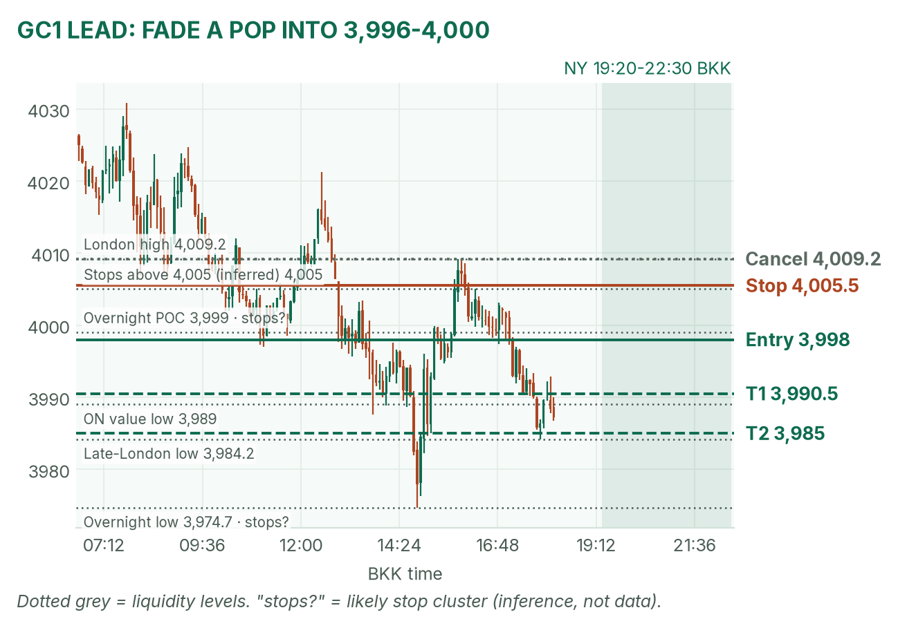
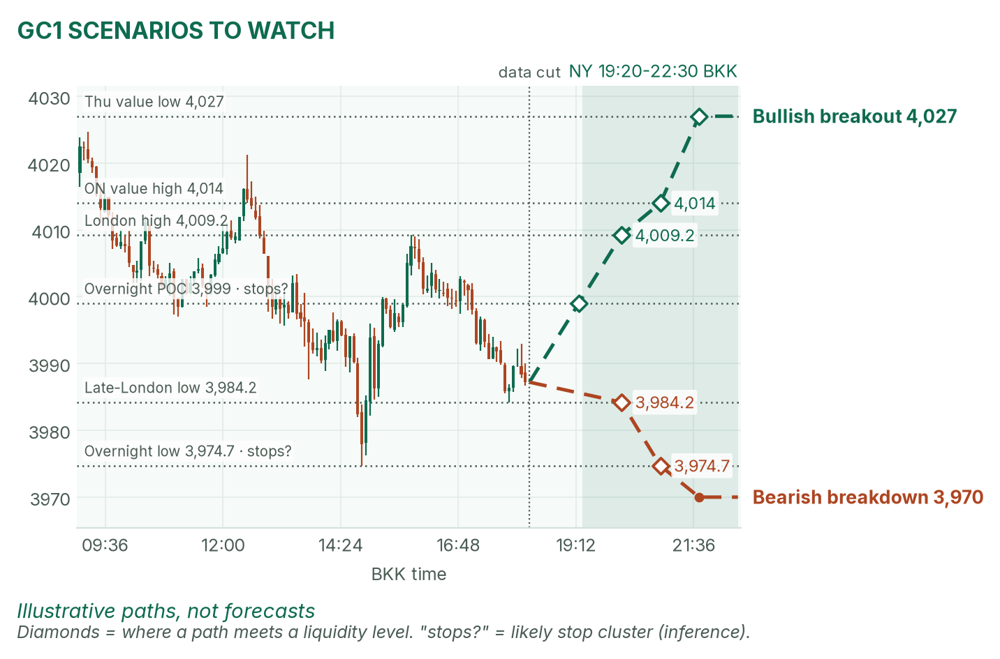
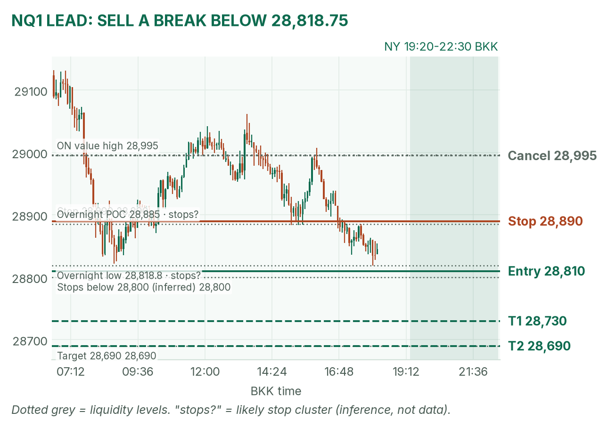
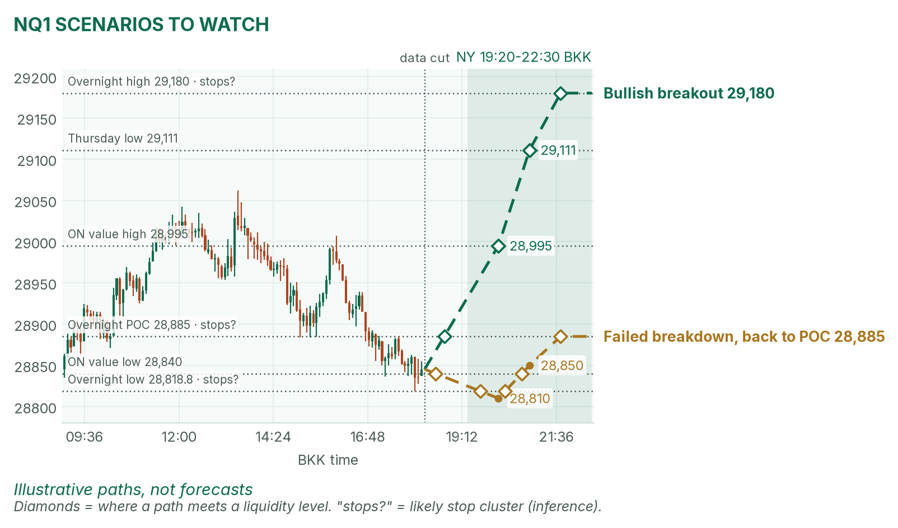

Tech scare, month-end. Gold sits under its $4,000 POC; Nasdaq hugs its overnight low.
Window 19:20–22:30 BKK. Data cut 18:15 BKK: GC 3,987.2, NQ 28,845.25 (TopstepX Z26, last complete 5m bar). Levels only. Ideas, not advice.
Summary
GC: fade a failed pop into 3,996–4,000. Stop 4,005.5, target 3,985 (1.7R). About 36%.
NQ: sell a 5m close below 28,818.75, the overnight low. Stop 28,890, target 28,690 (1.5R). About 35%.
US wage costs (ECI) at 19:30, Chicago PMI at 20:45. No entries 19:25–19:32 or 20:40–20:47.
Flat by 22:30, no matter what.
The market story
Amazon and Intel disappointed after Thursday's close and the AI sell-off spread. NQ opened Asia at 29,180, fell through Thursday's low (29,111) and has ground down to 28,818.75 at 18:00. Gold fell from 4,038.2 to 3,974.7 at 14:50, bounced to 4,009.2 in London, and is fading again under 3,999, its overnight POC (the price where the most contracts traded).
Bonds were bought, so the 10-year yield fell to about 4.92% in Asia. Lower yields usually help gold, yet gold fell: December Fed hike bets (about 75–80%) and $103 oil are winning, per April's pre-London brief. It is also month-end, when funds rebalance.
How I read it: both are in downtrends with lower highs. I sell gold's pops and Nasdaq's breaks, and I stand aside if month-end buying lifts them back into value.
News (BKK)
Time
Event
Forecast
Prior
Read
19:30
US Employment Cost Index, Q3
0.8%
0.9%
Hot (0.9%+) lifts hike bets: bad for gold and NQ.
20:45
Chicago PMI, Oct
n/a
n/a
Forecast not confirmed; respect the gap.
No-trade zones: 19:25–19:32 and 20:40–20:47. ECB's Lane speaks at 23:10, after the window.
Levels to watch
Level
GC
NQ
Thursday high / low
4,081.7 / 4,016.3
29,794.25 / 29,111
Overnight high
4,038.2
29,180
London high
4,009.2
29,007.25
Overnight value area (where 70% of volume traded)
3,989–4,014
28,840–28,995
Overnight POC
3,999
28,885
Overnight low
3,974.7
28,818.75
Typical window range (median / 80th pct, 20 days)
39 / 51 pts
296 / 413 pts
Gold (GC1)
Bias: bearish. Lower highs all day, and price is below overnight value. My NY gold rule takes the COMEX opening range from 19:20 and fades its edges back toward the POC; today that POC sits at the round $4,000.
The trade: fade a failed pop
Entry
3,996–4,000 (plan 3,998): a pop into the POC that closes back below it on 5 minutes, after the COMEX range sets and after 19:32
Stop
4,005.5: above the late-London swing high (4,005), where buy stops likely sit (inference)
Targets
1R partial 3,990.5 · full target 3,985 (1.7R), just above the 18:00 low of 3,984.2
Cancel
Trades above 4,009.2 (London high) before entry, or no entry by 21:30
Probability
~36%, an estimate. Basis: NY gold opening ranges mostly failed in my Aug–Oct study (not significant); the stop is 1.9 five-minute ATRs (average bar size, 3.9 pts).
Why: sellers capped London at 4,009.2, then again at 4,005. No pop, no trade. A hot ECI can drop gold straight through 3,985 without me; I don't chase it. April's pre-London brief agrees; her NY brief isn't in yet (no NY brief cross-check). VWAP (volume-weighted average price) is a filter only after 19:50.

GC 5m bars to 18:15 BKK, window shaded. London's bounce failed at 4,009.2.

Illustrative paths, not forecasts: the other two setups at liquidity levels (prices where resting orders likely cluster).
Scenarios to watch
Bullish breakout: two 5m closes above 4,009.2. Aims for 4,014 (value high), then 4,027 (Thursday value low).
Bearish breakdown: a 15m close below 3,984.2. Aims for 3,974.7, the overnight low, where sell stops likely sit (inference).
Nasdaq (NQ1)
Bias: bearish. It broke Thursday's low early and never got back. My NQ rule trades breaks of the fixed 5-minute range after the 20:30 stock open.
The trade: bearish breakdown
Entry
28,810 on a 5m close below 28,818.75 (overnight low) and the 20:30–20:35 range low, after 20:47
Stop
28,890: back above the overnight POC (28,885)
Targets
1R partial 28,730 · full target 28,690 (1.5R), past the round 28,800 where sell stops likely sit (inference)
Cancel
NQ trades 28,995 (value high) before entry, or no break by 22:00
Probability
~35%, an estimate. Basis: NQ 5-minute range breakouts averaged +0.37R in my study (31 sessions, not significant); 120 points to target is about 40% of a typical window.
Why: fresh lows after a gap tend to pull in stops underneath. Month-end buying can snap it back; if it closes back above 28,818.75 fast, I'm out and don't re-enter. The pre-London brief agrees. VWAP filter only after 21:00.

NQ 5m bars to 18:15 BKK, window shaded. The trigger sits at the 18:00 low.

Illustrative paths, not forecasts: breakout and failed breakdown.
Scenarios to watch
Bullish breakout: a 5m close above 28,995 and the opening range high. Aims for 29,111 (Thursday low), then 29,180.
Failed breakdown: a poke below 28,818.75 that closes back above within 15 minutes. Aims for 28,885 (POC).
6E (not traded in NY): 1.1220, inside its overnight range of 1.11955–1.12345. London results: the GC long hit its target; the 6E short never triggered.
Before you click
ORB bases. GC NY: COMEX 19:20 range, ends at the first candle under half the average volume of the first two, fade to POC. NQ: fixed 5-minute range after 20:30, trade breakouts.
Checklist. 1) Room to today's max loss? 2) Within daily rules? 3) No release within 30 minutes? 4) Agrees with the bias? 5) At a marked level? 6) Setup tagged? 7) Entry, stop, 1R partial, target set? 8) Calm, not chasing?
Reset (60 seconds). Breathe in 4, hold 4, out 6, five times. Name the feeling in one word. "Eager"? Wait 5 minutes.